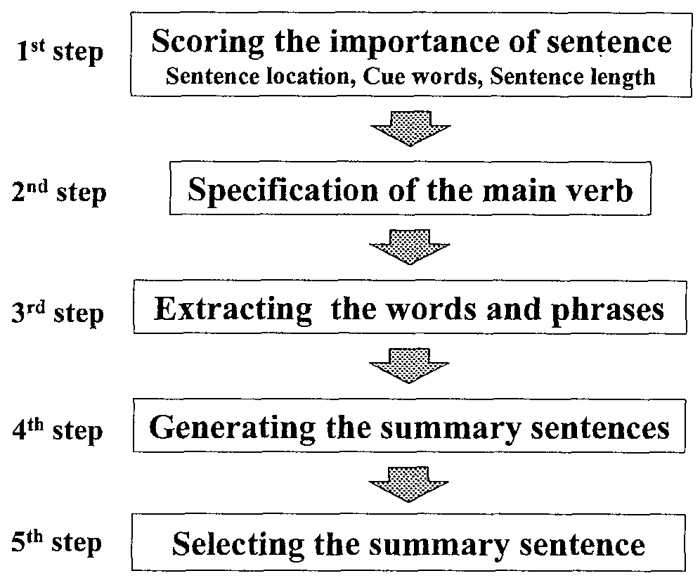
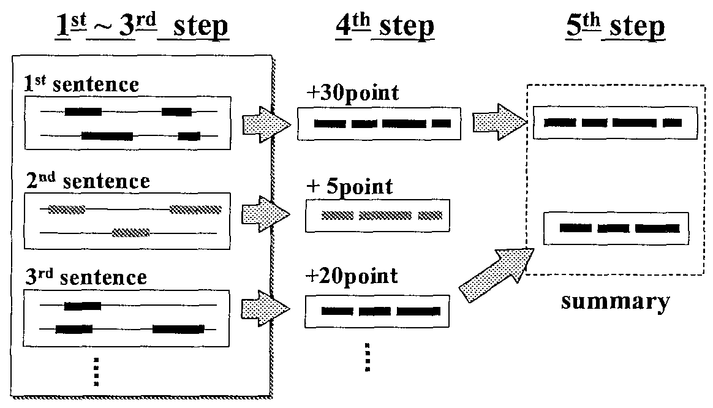
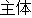
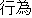
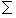
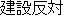

word ".
word ".
We propose a new method of summarizing newspaper articles that extracts important words and phrases from original articles using a case-frame dictionary, and generates a summary by reconstructing those extracted words and phrases. The number of sentences in the generated summary can be controlled by from one to a few sentences the users. We have also developed the prototype summarization system ALTLINE, and evaluate the system by comparing generated summaries to human-produced summaries. This evaluation result shows that the ALTLINE was ranked near the middle among all of the human subjects, proving that the system summaries are comparable to human summaries.
Because of the dramatic increase in text information, it is difl1cult for us to precisely select the information we really need. In addition, since mobile terminals have become popular, the information we receive needs to be compact. Therefore, there is a strong demand for automatic summarization of texts.
Various methods of summarization have been developed, and most of these are methods that use extracted sentences or other relatively large textual units as summaries. For example, there are methods that extract sentences based on importance by counting the appearance frequency of words in the text (Edmundson, 1969; Luhn, 1958; Zechner, 1996). Another method extracts sentences by using an implicit discourse structure (Marcu, 1997). However, summaries generated by these methods include a lot or unnecessary information, snch as needless modifiers. Therefore, these methods are not appropriate because they do not minimize the information extracted. On the other hand, summaries created by enumerating sentences are problematic because the coherence and readability of the summaries tend to be low. Therefore, several recent studies move beyond the extraction of sentences or other relatively large textual units, for example, methods to extract important words and phrases (Hovy and Lin, 1997; Oka and Ueda, 2000) and methods to extract the words and phrases grammatically (Knight and Marcu, 2000; Jin and McKeown, 2000). Studies have also been conducted to advance with the readability of summaries (Mani et al., 1999; Nanba and Okumura, 2000). In these methods, there is an abstractive method approach to replace some of the concepts that appear in the original text with hypernym (Hovy and Lin, 1997). However, enumerating the important words and phrases also reduce readability and coherence, because it does not produce clear sentences. Otherwise, an enormous amount of knowledge is needed to integrate concepts or to paraphrase.
In this paper, we propose a method that can extract not only sentences but also important words and phrases from original articles and generate a summary by reconstructing those extracted words and phrases. Our proposed method increases compressibility by extracting the necessary and sufficient words and phrases, and solves the problem of readability by generating sentences from these words in addition to simply extracting these words. Because we consider that a subject, a predicate verb and an object are necessary at a minimum in order to constitute a sentence, this method selects case frame elements in order to extract important words and phrases. Thus, this method provides us with the necessary and sufficient information for a short summary. Furthermore, we use the case-frame dictionary (Ikehara et al., 1997) of the Japanese-to-English Machine Translation system ALT-J/E (Ikehara et al., 1991), so as to use the practical knowledge that we can obtain. Our summarization model consists of the following two points:
In the former, for the extraction or words and phrases based on importance, we consider two approaches:
The important key words A) are those used to express the main points of an article. These are frequently appearing words that can also be extracted by conventional key word extraction. However, these are insufficient to improve readability, because they do not form a sentence. On the other hand, words necessary for sentence gencration B) include some key words A), but are not limited to them. For example, functional words would be necessary to constitute a sentence, and nouns and verbs that aren't included in the key words would also be necessary. In this paper, we focus on the word and phrase extraction of B) to generate a sentence for summarization.
Moreover, we implemented the newspaper article summarization system ALTLINE using the above method. ALTLINE can generate both single and multiple sentences. Because we extract only important words and phrases, there is high compressibility. We also designed a criterion to evaluate ALTLINE by comparing it with experimental results of human-generated summaries.
In this section. we describe the summarization method. Figure 1 shows the summarization procedure.
|
 |
There are five steps. In the first step, an importance score is assigned to each sentence. In the second step, the main verbs are specified. In the third step, the important words and phrases are extracted by the case-frame Information of the main verb and exception extract rules. In the fourth step, summary sentences are generated by reconstructing those extracted words and phrases. Finally, the system selects and outputs some high score sentences according to compressibility.
We choose an important sentence after carrying out morphological analysis and a dependency analysis of the original sentences. We also use information on sentence location. cue words. and sentence length to score the importance.
1) Sentence location
In a preliminary study (Hatayama et al., 1999), we investigated what portions of the original information was necessary to generate a one-sentence summary, specifically, where in the original article the necessary information to generate a one-sentence summary was contained. We found that this information is in the first sentence 73.4% of the time, and in the first paragraph 91.9% of the time. Judging from the results, we can see that the importance of a sentence nearer to the top is higher.
2) Cue words
Cue words are given scores, Examples of cue words are conjunctive words like "Sonokekka "
( as the result of ) and word correspondence like "X announced Y-plan. The Y-plan is ..." .
Moreover, parentheses are used as cue expressions.
For example, In Japanese, parentheses are added to words that we want to emphasize, e.g,, " word ".
3) Sentence length
In the preliminary study, we found that a short sentence tended to be an introductory sentence that does not express an important topic. Therefore, the score of importance for extremely short sentences is low.
Our method sums up the three scores.
In extracting important elements within the selected sentence, we first specify the main verb. Several verbs usually exist in one sentence. We must specify and extract the verb that has the most important meaning among all of the verbs in the original article.
It is common to see the following kind of expressions in Japanese newspaper articles:
| J: | X ha / sannyuu wo / mitomeru / kimeta X / the entry / permit / decided |
|||
| E: | X decided to permit the entry | |||
Most Japanese articles do not express that "X permit the entry ..." but rather that "X decided/announced to permit the entry..." . Therefore, we must determine which is the main verb. For the important meaning of the original sentences, tIie main verb is "permit" . In this paper, we define the verb that has the most important meaning in the original sentence, such as "permit" above, as "the main verb". We also define a predicate verb that cannot be the main verb, such as "dccided/announced" as used in the above example, as "the verb of the modality expressIon." There are 47 rules for verb specification at present, and 14 exception rules for verb specification. For example, in the case of complex sentences consisting of a direct verb and a modal verb, we use the latter as the main verb.
We extract the case elements of the main verb, and also extract other elements in case-frame information.
In the preliminary study, we found that the necessary information was the obligatory case of the main verb. Additionally, the modifiers of the obligatory cases and other modifiers are unnecessary. We employ complements of the main verbs in the summary output and omit adjuncts and modifiers of the complements. We use NTT's case-frame dictionary to identify the complements. Since each entry of the dictionary comprises one verb and its complements with restriction rules written in a semantic category system (2,700 nodes), we can consider a modifier of the verb as a complement if the modifier satisfies the semantic restriction of the dictionary. Additionally, we prepared other word extraction rules. For example, if the complement is an abstract thing, its modifier is employed. If there are a number of modifiers, we give priority to the modiliers closer to the modified word. Lastly, the system generates one sentence using the extracted words.
Our system can generate several summary sentences. However, we limit our discussion to the most important summary sentences for simplicity.
ALTLINE can produce a very short summary by extracting only the most important elements. This system creates a one sentence summary for each sentence when a newspaper article is input. And this system selects and outputs some high score sentences according to compressibility. Figure 2 shows the procedure of the summarization. However, we shall explain only one sentence here.
|
 |
To illustrate the sentences shown in Figure 3 are input. ALTLINE then generates the summary shown in Figure 4. The words and phrases underlined in the original article are used for the summary, and the words and phrases in rectangles are the case-frame elements (we will describe these case-frame elements later). The most important sentences are output as the summary or the article. It should be noted that this is a Japanese article that we translated into English. We also use Japanese syntactic analysis information. The number at the end of each summary sentence expresses the sentence's importance score.
|
In the example of Figure 3, the system first gives scores by calculating the importance of each sentence. Second, it specifies the main verb. Because "decided" in "X decided to permit" is the verb of the modality expression, it specifies "permit" as the main verb. Third, it specifies the words and phrases to extract using the case elements of "permit" . The case-frames of "permit" are
| [  ] / [ / [ ] / / [subject] / [ action ] / permit |
||
| Case-frame | ||
| [] / [] / MPT / entry / permit | ||
| Original words in the article | ||
The obligatory case-frame elements of "permit" are the subject and action, which correspond to "Ministry of Posts and Telecommunications" and "entry" , respectively, in the sentence. Furthermore, other words are extracted according to the word extraction rules and syntactic analysis information, namely, "BS data broadcasting" , which modifies the main verb by case relation, and "NTT group" , which modifies "entry" that is an abstract noun.
Lastly, the system generates one sentence using these extracted words (Figure 4).
|
We now describe the evaluation criterion ALTLlNE. As mentioned above, ALTLINE makes a summary based only on words which appear in the original text. To evaluate the capability of ALTLINE to extract informative and functional words fairly, we asked human subjects to make summaries under the same conditions as ALTLINE, that is, that the summarization use only words contained in the original text. We defined the "correct answer set" based on the human-produced summaries. By comparing the answer set to the summaries made by ALTLINE, in terms of whether informative and functional words can be extracted or not, we evaluate the proposed summarization method and ALTLINE (details of the comparison results are set forth in Section 5).
We developed this evaluation for the following reasons. Conventional reading comprehension evaluation, which evaluates whether original texts are understandable only by reading the summaries, is not appropriate for the evaluation of extracted informative and functional words. This is because human-beings can easily guess the content of an original text when frequent words extracted based only on such a measure as idf. Also, a conventional evaluation of whether the summaries contain clear sentences results in the evaluation of the sentence generation technique. Hence, the evaluation cannot evaluate whether or not the necessary and sufricient words for summarization are extracted.
We therefore developed the above evaluation method and collected human summaries. In this section, we describe the approach of the human summarizing experiment, the experimental conditions, and the experimental results. The comparison with ALTLINE is described in Section 5.
In this experiment, our objective is to evaluate ALTLINF. We imposed the restriction that only words and phrases written in the text could be used to generate a one sentence summary.
The subjects were 13 office workers, males and females in their 20s and 30s, because we assumed that they were familiar with reading newspaper articles. Hereafter, we refer to the subjects as Si (i = 1, ... , 13).
We did not explain to the subjects that our objective was to establish correct answers for a machine summarization. However, we did tell them that it was a reference study for machine summaries. We also explained that there were no expected answers in this experiment.
The subjects were given 100 articles set a task for each article. We instructed them to do the task for one article within 10-20 minutes. The articles could be read randomly.
We showed the newspaper articles (Section 4.2.1) and the word list for the answers (Section 4.2.2) to the subjects, and the subjects were told to make sentences using only the words in the word list.
The original newspaper articles were obtained from a CD version of the Mainichi Shimbun newspaper for 1998. The Mainichi Shimbun is a major Japanese daily newspaper. The newspaper's first page contains a broad range of topics that occurred on one day. In this experiment, we selected 100 articles from first pages at random, excluding articles without text or those with figures. Article headlines were deleted from each article. The paragraph structure was not shown to the subjects.
The average article length was 9.04 sentences. The shortest article was 4 sentences, and the longest was 19. In terms of phrases, the shortest article had 49, while the longest article had 244. The articles had 119.34 phrases on average.
We made the word list as follows. We did morphoiogical analysis of the original text and segmented the phrases using the morphological analysis tool ALTJAWS, which is part of the Japanese-to-English Machine Translation system ALT-J/E. Afterwards, we corrected the analysis errors, and added parentheses to particle and auxiliary verbs (see Appendix B).
We informed the subjects that they could only use words in the word list in their summary. They were allowed to conjugate particles and auxiliary verbs or delete them.
The subjects selected words necessary for summarization from among those in the word list and made a one sentence summary. We gave the subjects the followIng instructions.
Figure 5 shows the answers of three subjects for the article of Appendix A. Numbers with parentheses show the phrase number in the word list (Appendices B). The word list included many synonyms, which we therefore unified into one expression. For example, "The governor Masahide Ohta", "governor Ohta", and "Masahide Ohta the governor" became the unified single word "The governor Masahide Ohta."
|
The phrase average used by the subjects in tlieir answers for 100 articles was 5.49. The shortest was 4.17 phrases, the longest was 7.6 phrases.
We compared the ALTLINE summary results with the human-generated experiment results and analyzed the comparison.
We define that a correct answer set is the average of a human summary. From this definition, it is difficult to get better than human performance. However, this definition implies that getting close to human performance is good performance.
We input to ALTLINE the same articles (Section 4.2,1) used for the human summarization. It generated summaries automatically. For example, the ALTLINE summary for the articles in Appendices A and B were
| (2) Masahide Ohta the governor / (1) of Okinawa / (15) expresses / (14) his objection. | ||
Hereafter, we refer to ALTLINE as S0, and as A in Tables 1 and 2.
In 100 summaries, the phrases used by ALTLINE were 3.62 on average. This is much shorter than the 5.49 phrases on average for Si (i =1 1, ... , 13). The average for Si (i = 0, ... , 13) was 5.35 phrases.
We designed an evaluation criterion for the ALTLINE and human-produced summary results.
We denote that k (k = 1, ... , 100) is the number of articles, Si (i = 0, ... , 13) is the subject identifier, Jk is the total number of phrases for article k , and each phrase is,j (j = 1, ... , Jk ).
The Bkji in article k is the phrase that Si used for the answer, and it is given the following value.
| Bkji = | { | 1 | ( The purase that was used for an answer ) |
| 0 | ( The phrase that wasn't used for an answer ) |
We can show the number of phrases that subject Si used for the answer in article k by the following function.
| Jk | |
 | |
| Wki = | Bkji |
| j = 1 |
We define the importance SCOREkj of the phrase j , for article k as follows.
| 13 | Bkji | |
| SCOREkj = | ---- | |
| Wki | ||
| i = 0 |
When we decide one threshold THk , we define a set of phrases j satisfying SCOREkj > THk with correct answer set ASETk in article k .
ASETk = {j | SCOREkj > THk }
We set the threshold THk so that the average of the correct answer set was close to the average of the subjects. That is, THk satisfies the following function.
| 13 | Wki | |
| num (ASETk ) = | ---- | |
| 13 | ||
| i = 0 |
We also define function num (x) as the number of x .
We deline the recall, precision, and F-measure of each subject in the following way:
| { Answer of Si } { The correct answer set } | |
| R = | ------------------------------------------------ |
| { The correct answer set } |
| { Answer of Si } { The correct answer set } | |
| P = | ------------------------------------------------ |
| { Answer of subject Si } |
| 2 R P | |
| F = | -------- |
| R + P |
Table 1 shows the results of Si (i = 0, ... , 13) and the random selection from the entire article (Br ), the random selection from the first sentence (Bl ), and the high-idf phrases selected from the entire article (Bi ). The number of selected phrases is the same as the number of ASETk for each article k .
| Rank | R | P | F | Phrases | ||||||||
| 1 | S13 | 0.867 | S7 | 0.779 | S13 | 0.717 | S11 | 7.5 | ||||
| 2 | S11 | 0.801 | A | 0.777 | S7 | 0.704 | S13 | 7.4 | ||||
| 3 | S5 | 0.760 | S1 | 0.718 | S12 | 0.692 | S4 | 6.7 | ||||
| 4 | S4 | 0.698 | S12 | 0.715 | S5 | 0.676 | S5 | 6.6 | ||||
| 5 | S12 | 0.697 | S13 | 0.637 | S11 | 0.660 | S9 | 6.3 | ||||
| 6 | S7 | 0.668 | S5 | 0.635 | S1 | 0.648 | S3 | 5.9 | ||||
| 7 | S8 | 0.626 | S2 | 0.635 | A | 0.622 | S8 | 5.4 | ||||
| 8 | S9 | 0.617 | S8 | 0.618 | S8 | 0.609 | S12 | 5.2 | ||||
| 9 | S1 | 0.615 | S6 | 0.591 | S4 | 0.606 | S10 | 4.7 | ||||
| 10 | S3 | 0.566 | S11 | 0.587 | S2 | 0.570 | S7 | 4.5 | ||||
| 11 | A | 0.544 | S10 | 0.565 | S9 | 0.557 | S2 | 4.5 | ||||
| 12 | S2 | 0.538 | S4 | 0.565 | S3 | 0.526 | S1 | 4.4 | ||||
| 13 | S10 | 0.515 | S9 | 0.531 | S10 | 0.525 | S6 | 4.2 | ||||
| 14 | S6 | 0.479 | S3 | 0.510 | S6 | 0.515 | A | 3.6 | ||||
| Ave. | 0.642 | 0.633 | 0.616 | 5.5 | ||||||||
| 15 | Bl | 0.366 | Bl | 0.364 | Bl | 0.364 | Bl | 5.2 | ||||
| 16 | Bi | 0.141 | Bi | 0.124 | Bi | 0.131 | Bi | 5.2 | ||||
| 17 | Br | 0.050 | Br | 0.050 | Br | 0.050 | Br | 5.2 | ||||
Wo show the mean results for 100 articles. From the results, ALTLINE A ranked around 7 in the F-measure, around 11 in recall, and around 2 in precision. Moreover, the number of ALTLINE is near to the average of all subjects. ALTLINE was able to achieve resuIts comparable with human summarization.
In the above section, we made the correct answer set by all subjects (including ALTLINE). In this section, we compute the F-measure for each subject Si using the correct answer set that does not include Si . This method divides the subjects into two groups and determines the correct answer set for each group.
The mean for 100 articles is illustrated in Table 2. We set the threshold THk so that the average of the correct answer set was close to the average of the subjects. From the results, ALTLINE A ranked around 9 In the F-measure, around 13 in recall, and around 3 in precision. Again, recall is low, precision is high, and the number of ALTLINE is near to the average of all subjects. ALTLINE was able to achieve results comparable with human summarization.
| Rank | R | P | F | Phrases | ||||||||
| 1 | S13 | 0.853 | S7 | 0.802 | S7 | 0.718 | S11 | 7.5 | ||||
| 2 | S11 | 0.784 | S1 | 0.737 | S13 | 0.716 | S13 | 7.4 | ||||
| 3 | S5 | 0.745 | A | 0.734 | S12 | 0.698 | S4 | 6.7 | ||||
| 4 | S4 | 0.693 | S12 | 0.729 | S5 | 0.675 | S5 | 6.6 | ||||
| 5 | S12 | 0.689 | S2 | 0.654 | S1 | 0.058 | S9 | 6.3 | ||||
| 6 | S7 | 0.670 | S8 | 0.654 | S11 | 0.655 | S3 | 5.9 | ||||
| 7 | S8 | 0.649 | S5 | 0.639 | S8 | 0.640 | S8 | 5.4 | ||||
| 8 | S1 | 0.613 | S13 | 0.636 | S4 | 0.613 | S12 | 5.2 | ||||
| 9 | S9 | 0.613 | S6 | 0.604 | A | 0.584 | S10 | 4.7 | ||||
| 10 | S3 | 0.570 | S10 | 0.586 | S2 | 0.582 | S7 | 4.5 | ||||
| 11 | S2 | 0.538 | S11 | 0.584 | S9 | 0.563 | S2 | 4.5 | ||||
| 12 | S10 | 0.519 | S4 | 0.577 | S3 | 0.543 | S1 | 4.4 | ||||
| 13 | A | 0.506 | S9 | 0.539 | S10 | 0.540 | S6 | 4.2 | ||||
| 14 | S6 | 0.472 | S3 | 0.527 | S6 | 0.523 | A | 3.6 | ||||
| Ave. | 0.637 | 0.643 | 0.622 | 5.5 | ||||||||
Because ALTLINE uses case-elements written in a case-frame dictionary to generate a summary, case-elements become the least specific clues for summarization. Therefore, the number of phrases chosen by ALTLINE is much smaller than those of the subjects. From the evaluation results, the recall rate tends to be low but the precision rate is high. Therefore, we believe that this result shows that ALTLINE can extract the necessary and sufficient words to generate a summary sentence. In sentence selection, subjects extract words from the entire text, on the other hand, ALTLINE extracts words from one sentence that has high important one, and generates a new sentence. Therefore, our system is able to specify a location that subjects extract words.
We think that there are three causes for the low recall. The first is that an insufficient number of word extraction rules is used. The second is the failure to specify main verbs. The third is the effect of parsing errors in syntactic and semantic analysis. In the first case, as ALTLINE can extract necessary and sufficient words to generate a summary, it appears that it does not include enough modifiers to make the summary sentence more informative. We obtain other words and phrases (modifiers) of case elements with the word extraction rules. Thus, among these three causes, the insufficiency of the word extraction rules is regarded as the most significant factor. However, we believe that the current system is effective enough for a task that places importance on precision or high compressibility because the precision is still high. Second, when the system incorrectly chooses a verb with a modality expression as the main verb, it attempts to extract case elements for the wrong verb. Therefore, the generated sentence does not give the appropriate point of the original article. For example, ALTLINE summarized the original sentence, "NationsBank, the third largest bank holding company in the U.S., and the fifth place BankAmerica announced on January 13 that they agreed to merge sometime between October and December" , as "NationsBank and the fifth place BankAmerica announced" . The reason for this result is that the system mistook "announced" as the main verb. This is due also to the insufficiency of the main verb specilication rule. Lastly, in the case of parsing errors, there is some negative influence. It is general important work in NLP.
From the extraction results by random selection or idf in Table 1, the conventional word extraction method cannot select the necessary and sufficient words for generating summaries. On the other hand, the proposed method in ALTLINE seems to achieve this extraction because it achieved an average evaluation compared with all the summaries.
We proposed a new method of summarizing newspaper articles that extracts, using a case-frame dictionary, important words and phrases from original articles, and generates summaries by reconstructing these extracted words and phrases. We also developed a prototype summarization system, ALTLINE, and evaluated the system by comparing generated summaries to human-produced summaries. This evaluation result showed that the ALTLINE ranked near the middle among all the human subjects, and proved that the system's summarization capabilities are comparable to a human.



 (On January 14th, Masahide Ohta, the governor of Okinawa, told our newspaper reporter for the Mainichi Shinbun
that he had objections to the first stage of the construction of a U.S. Armed Forces sea heliport off of Nago city.)
(On January 14th, Masahide Ohta, the governor of Okinawa, told our newspaper reporter for the Mainichi Shinbun
that he had objections to the first stage of the construction of a U.S. Armed Forces sea heliport off of Nago city.)
And then, he said that he didn't want to make any conclusions that might annoy Prime Minister Hashimoto, but he wonders whether there might be a substitute plan. He said he would propose his opinion to Prime Minister Ryutaro Hashimoto.)
| 1 |  |
| 2 | |
| 3 | |
| 4 | |
| 5 | |
| 6 | |
| 7 | |
| 8 | |
| 9 | |
| 1 | (of) Okinawa |
| 2 | (topic) Masahide Ohta the governor |
| 3 | on 14th |
| 4 | off of Nago city |
| 5 | (of) a candidate |
| 6 | (about) the constructionn of a U.S. Armed Forces sea heliport |
| 7 | (topic) our newspaper reporter for the Mainichi Shinbun |
| 8 | objections (to) |
| 9 | (to) the first stage |